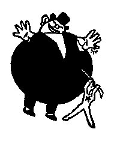
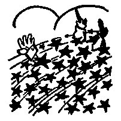
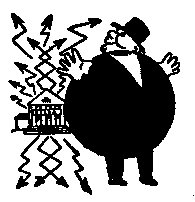
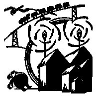

|
Vladimir Majakovskij: O tom Telefon se vrhá na všechno Vsoukal se telefon do tenkého drátu. Roztáhl na mušli sluchátka obruby, kropil krupobitím zvonky v aparátu, vychrlil třaslavou lávou útroby. Řinčení kvičelo, vybuchlo o stěny tisíci rolniček s rachotem Se stropu na zem zvuk zvonivé vhozen a zas, jako když o skla tříská míč, ke stropu vzlétal, udeřiv o zem, a rázem sesypal se na zem třískami. Chvěl každým smítkem, všemu se chtělo Domem telefon v povodni tónů tonul. [...] Byla bolest Z oblaku vyzrál meloun měsíce. Postupné na stěnu stínování padlo. Petrovský park. za mnou. O – u – u – u! Snad autem sražen, jak dlouhý Fičí metelice sakrů: „Snad z Nepu jsi nevoslep? Copak si šlapeš na paty?! Ech, ty! Ty chlupatý!" Ach! Běda! Mají mne za medvěda. Omyl! že nejsem medvěd, Vladimir Majakovskij: Kdysi a nyní Kdysi Říkali jsme: – Utopie! – Naděláme z vás pilin,  Ale za nějaký čas  Nyní Na elektrifikaci – Utopie! –  Jen ať se Bude jak v New Yorku  |